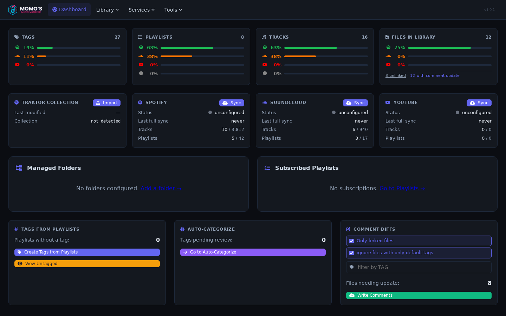
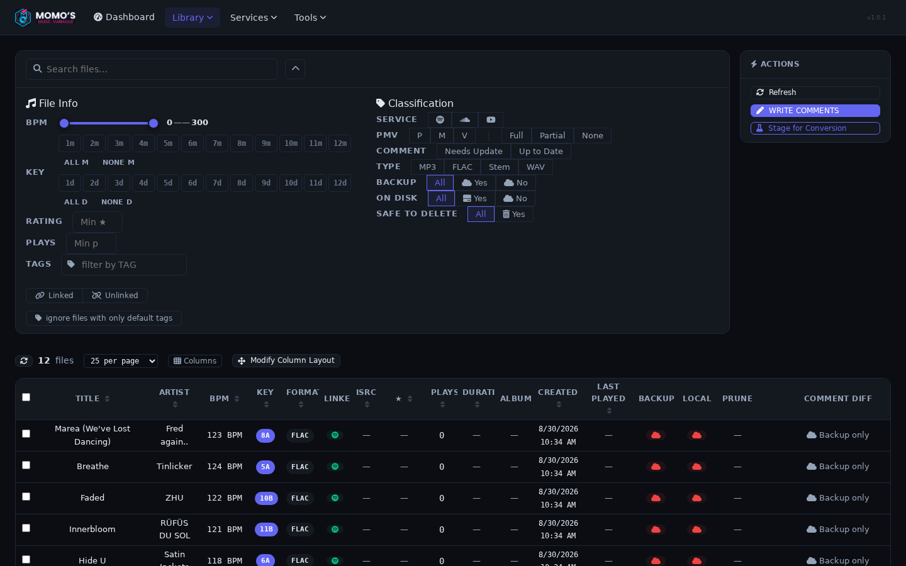
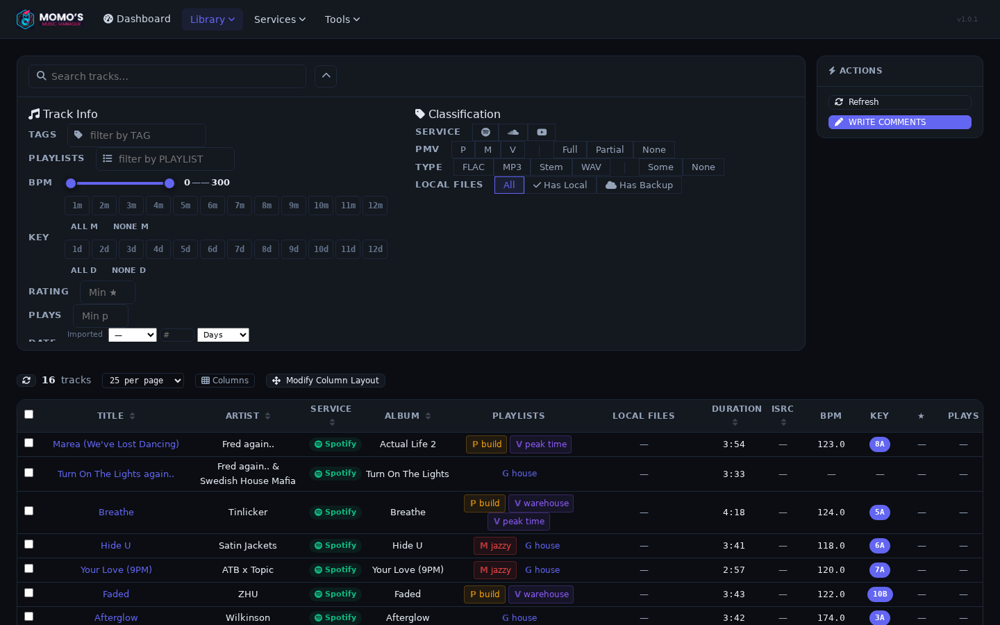
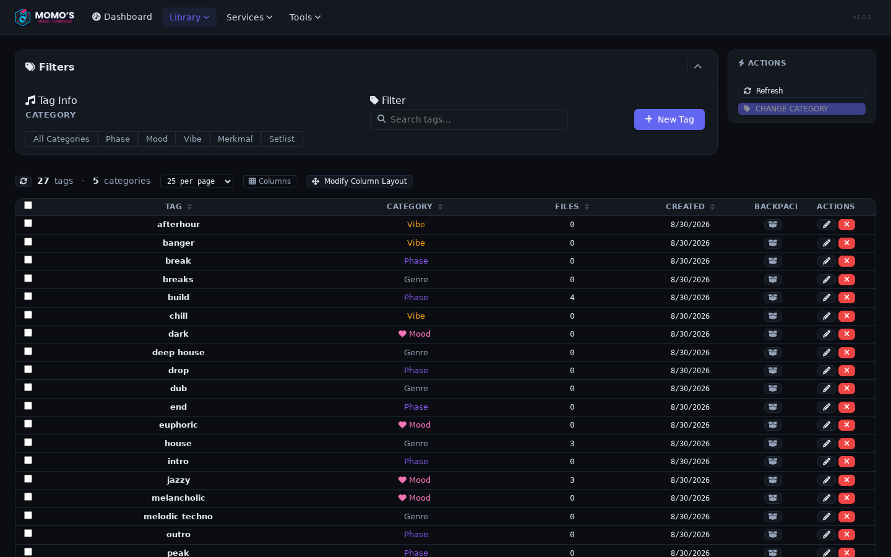
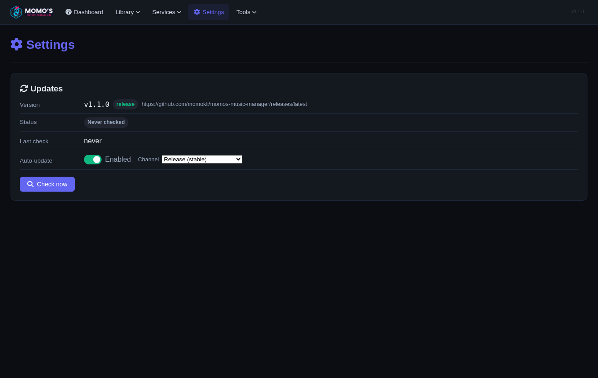
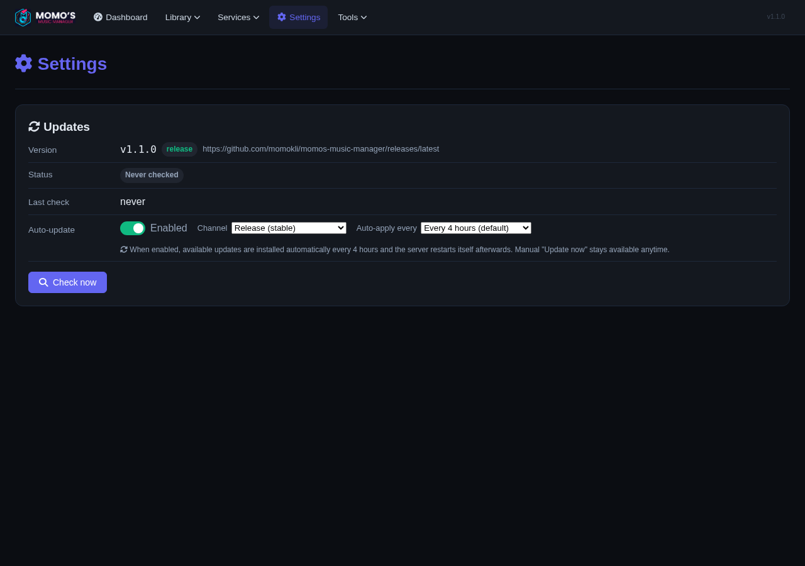

momo's music manager
your playlists are your tags, written to the comment field, wherever you dig or play.
Rolling build of the current main branch · v1.2.0 ·
macOS (universal) · Windows · Linux
What it does
One local library for Spotify, SoundCloud and your files, in sync with your DJ software.
Library sync
Sync Spotify and SoundCloud playlists and tracks into one local library. Subscribe to playlists, track changes.
Harmonic matching
BPM & key detection with Camelot-wheel matching. Build sets that stay in key.
Tag organization
Free-form tags with categories and parent relations. Auto-categorization runs a local embedding model, no cloud. Tags map to playlists and land in your ID3 comments.
Traktor integration
Import collection.nml and write BPM/key/comment back. Traktor Smart Lists just work.
Web UI, locally
A fast, dark single-page app. One binary, one port, localhost:3000.
Native macOS app
Menu-bar app with a universal DMG. Starts on login, runs in the background.
Update channels
Stay on the stable release or follow fresh rolling builds of main — switch in the settings, with a guard against accidental cross-channel changes.
Auto-update with auto-apply
Optional signed auto-updates with a configurable auto-apply interval — Ed25519-verified downloads, atomic swap, automatic rollback if a new build fails to start.
Event telemetry, opt-in
Off by default: structured core events (tasks, scans, downloads, updates) leave as HTTPS batches to your own collector. Crash-safe on-device spool, no secrets.
Screenshots
The dashboard, library and settings pages, straight from the running app.






Download
Release v1.2.0 (stable) or the rolling build of main, rebuilt on every push.
🍎 macOS: first launch
Unsigned and not notarized, so Gatekeeper may block it:
- Download and open the DMG.
- Drag momo's music manager into Applications.
- First start: right-click the app → Open → Open.
Runs in the menu bar, opens your browser at localhost:3000. Notarization planned,
roadmap M4.
🪟 Windows: SmartScreen
Unsigned, so SmartScreen may show “Windows protected your PC”. Click More info → Run anyway. Code signing planned, roadmap M3.
🐧 Linux: portable archive
Portable tar.gz with a systemd unit for headless mode. AppImage/Flatpak planned,
roadmap M5.
Prefer the GitHub release page? v1.2.0 (stable) or latest-main (rolling), or see all releases.